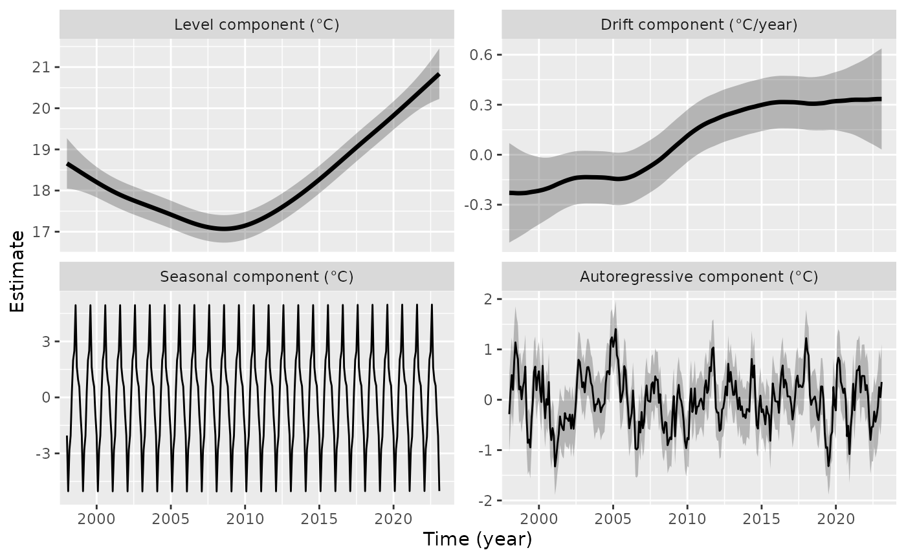
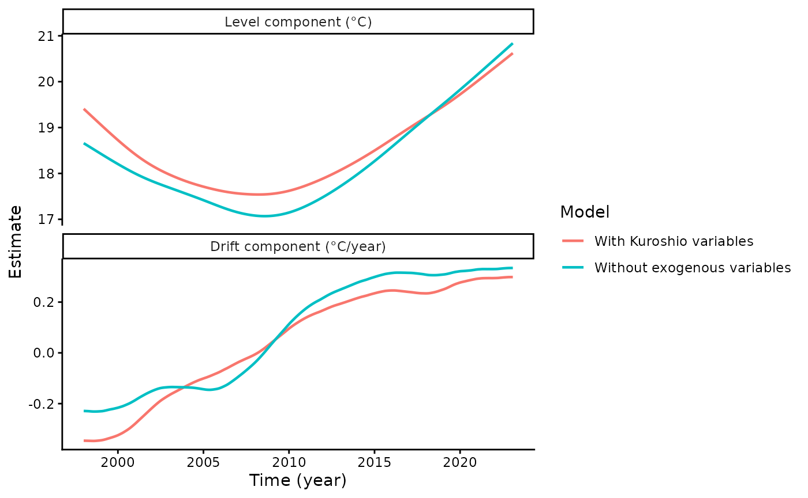
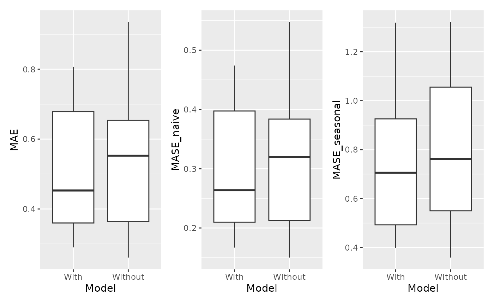
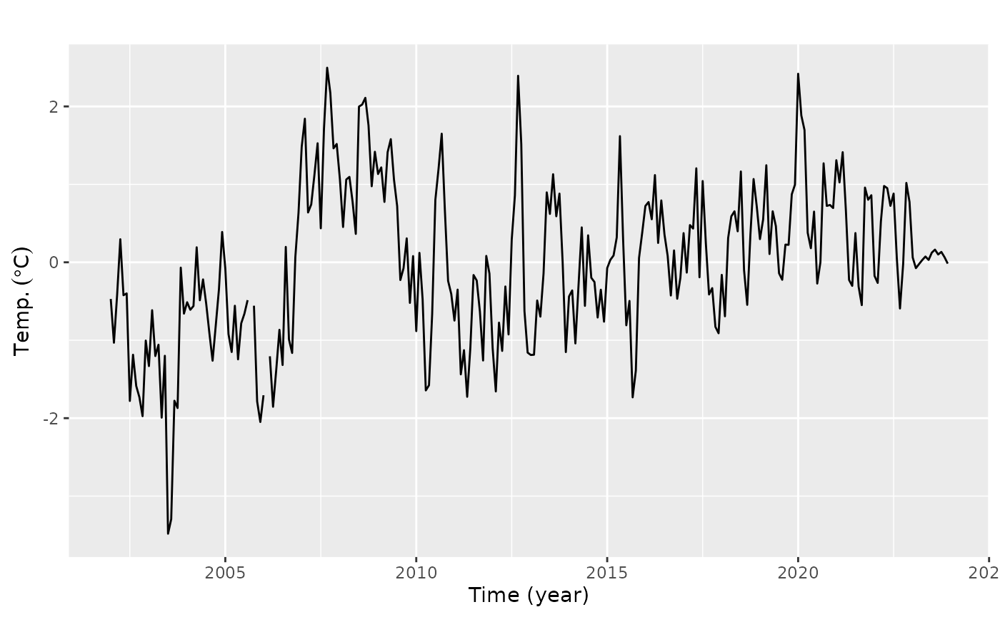
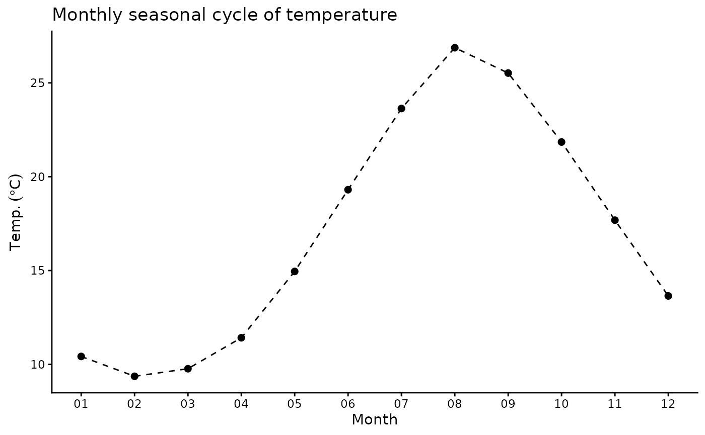

tempssm Reference Manual
Version 0.3.1
Akira S. Hirao, Shinya Baba, and Momoko Ichinokawa
2026-08-01
Source:vignettes/articles/tempssm_manual.Rmd
tempssm_manual.RmdSummary
tempssm is an R package for state-space modeling of
environmental temperature time series, including air and water
temperature observations. It provides a practical framework for
assessing how long-term trend, seasonal variation, autoregressive
dependence, and optional exogenous effects contribute to observed
temporal variation. The package facilitates the application of linear
Gaussian state-space models estimated by Kalman filtering and smoothing,
using the KFAS package as the computational backend
(Helske, 2017).
Key Features
- Fits linear Gaussian state-space models to environmental temperature time series.
- Represents temperature dynamics using interpretable latent components: long-term trend, seasonal variation, autoregressive dependence, and optional exogenous effects.
- Supports arbitrary seasonal frequencies, while the current examples and validation focus primarily on monthly temperature data.
- Allows users to specify an arbitrary order of the autoregressive component (default: AR(1)).
- Includes time-series cross-validation tools for model evaluation.
Input Data Format
R ts objects are the primary input format for
tempssm. The temperature series passed to
tempssm() should be supplied as a univariate
ts object, and optional exogenous variables can be supplied
as univariate or multivariate ts objects. The
ts class is base R’s standard format for regularly spaced
time series (see the stats::ts documentation: https://search.r-project.org/R/refmans/stats/html/ts.html).
The package also provides utility functions for converting common
tabular and observational data formats into ts objects
before model fitting.
The seasonal cycle used by tempssm() is taken from the
frequency attribute of the input ts object.
For example, frequency = 12 represents monthly data.
Prior Art and Scope
tempssm provides a domain-focused workflow for analyzing
temperature time series with linear Gaussian state-space models. It
brings together model construction, component extraction, uncertainty
summaries, residual diagnostics, visualization, and time-series
cross-validation in a single R package interface tailored to temperature
applications.
The package builds on established statistical methodology, including
linear Gaussian state-space modeling, Kalman filtering, and Kalman
smoothing. Model estimation is handled through the KFAS
package, which provides a general framework for state-space models in
R.
The initial implementation was adapted from the supplementary code provided by Baba (2024), accompanying Baba et al. (2024), which analyzed sea temperature trends using a linear Gaussian state-space model. The supplementary code is publicly available at:
https://github.com/logics-of-blue/sea-temperature-trend-jogashima
Compared with that prior implementation, tempssm extends
the workflow into a reusable R package interface with input validation,
documented S3 methods, tests, diagnostics, cross-validation utilities,
and examples for broader temperature time-series analysis.
Model Overview
The model implemented in tempssm can be viewed as an
extension of the Basic Structural Time Series Model (BSTSM), a standard
state-space formulation that represents an observed time series using
latent trend, seasonal, and irregular components. Following the
temperature time-series application of Baba et al. (2024),
tempssm keeps this interpretable decomposition and adds
autoregressive dependence and optional exogenous effects. This makes it
useful for separating long-term temperature change, seasonal cycles, and
short-term departures.
The model is estimated with KFAS, and
tempssm() returns both filtering and smoothing estimates.
Unless otherwise stated, the summaries, diagnostics, and plots in this
vignette use smoothed state estimates.
The full mathematical specification, including the observation equation, state decomposition, seasonal constraint, autoregressive component, exogenous component, parameter count, and estimation procedure, is described in the separate model specification document, available as a PDF in the package repository:
https://github.com/akihirao/tempssm/blob/main/vignettes/model-specification.pdf
Tutorial Workflow
This tutorial demonstrates a typical workflow for applying
tempssm to monthly environmental temperature time series.
Exercise I uses the simulated sea surface temperature (SST) dataset
sst_sim to fit a baseline state-space model without
exogenous variables, inspect latent components, check residual
diagnostics, and obtain short-term predictions. Exercise II extends the
same workflow by adding simulated marine-environment variables and
evaluating whether they improve model interpretation and conditional
predictive performance using diagnostics and time-series
cross-validation.
The aim is not to draw new scientific conclusions from the simulated datasets, but to show how the package can be used to structure model fitting, diagnostics, prediction, and model comparison workflows.
Setup
Load the following R packages to run the examples below. If any packages are not installed, please install them as needed.
Exercise I: Baseline Model for a Univariate Temperature Series
Exercise I introduces the basic workflow for fitting a univariate model, visualizing latent components, checking residual diagnostics, and making short-term predictions without exogenous variables.
Load the Simulated SST Dataset
The package includes sst_sim, a simulated monthly sea
surface temperature (SST) dataset.
-
Dataset: Simulated monthly SST off Jogashima,
Japan
- Unit: °C
- Period: January 1998 to February 2023
The dataset was generated from a state-space model analysis of sea
temperature off Jogashima reported by Baba et al. (2024). It is used
here as a reproducible response series for demonstrating the basic
tempssm workflow. Exercise II combines the same simulated
SST series with simulated marine-environment variables.
## Jan Feb Mar Apr May Jun
## 1998 16.19 13.82 16.44 16.49 19.70 21.83
summary(sst_sim)## Temp
## Min. :11.17
## 1st Qu.:16.22
## Median :18.39
## Mean :18.23
## 3rd Qu.:20.11
## Max. :26.10Plot the Monthly SST Series
We begin by visualizing the monthly SST time series to examine its overall structure, including apparent trends, seasonal variability, and the presence or absence of missing observations.
plt_sst_sim <- forecast::autoplot(sst_sim) +
labs(y = expression(Temp.~(degree*C)),
x = "Time (year)") +
ggtitle("Monthly SST off Jogashima, Japan") +
theme_classic()
plot(plt_sst_sim)
The overall mean SST is approximately 18.2 °C, and a clear seasonal pattern is visible. The raw time series suggests that SST may have decreased gradually from the beginning of the record to around 2008 and then increased thereafter. However, interannual variability is also evident, making the long-term pattern difficult to assess from the raw series alone.
Fit the Baseline State-Space Model
When a ts object containing temperature time-series data
(here, sst_sim) is passed to the core function
tempssm(), model construction and parameter estimation are
performed together. The returned S3 object of class tempssm
(here, res_base) stores the filtering and smoothing
estimates, as well as the constructed model and input data.
The simulated SST series used in this manual was generated under an AR(2) setting based on the original analysis of Baba et al. (2024). We therefore use an AR(2) specification as the baseline model in this detailed example. This is not a general recommendation that AR(2) should always be preferred. When such prior information is unavailable, a practical workflow is to start from the default AR(1) specification and then examine AR(2) or higher-order alternatives through residual diagnostics and sensitivity checks.
Here, AR means autoregressive. In tempssm, the
autoregressive component captures short-term serial dependence that
remains after accounting for the long-term level, drift, and seasonal
components. An AR(2) specification means that this short-term component
is modeled using dependence on the previous two time points.
# baseline model with a second-order autoregressive component
res_base <- tempssm(sst_sim, ar_order = 2)
summary(res_base)## tempssm summary
## -----------------
## Call:
## tempssm(temp_data = sst_sim, ar_order = 2)
##
## Model fit:
## Likelihood type: marginal
## Log-likelihood : -198.19
## k : 6
## Diffuse states : 13
## Converged : TRUE
##
## Variance parameters:
## Observation (H): 0.05517486
## State (Q trend): 4.945287e-06
## State (Q season): 0.0001859976
## State (Q ar): 0.1497545
##
## Components of auto-regression:
## Order of AR: 2
## Coefficient of AR1: 0.655325
## Coefficient of AR2: 0.07429946From the summary output, confirm that the model has converged
(Converged: TRUE). The output also reports the number of
parameters (k), the log-likelihood, the likelihood type,
and the number of diffuse initial states.
The parameter estimates correspond to the error variances and
autoregressive coefficients in the fitted state-space model.
H is the observation error variance, representing
variability in the observed temperature series that is not explained by
the latent states. The Q terms are process error variances
for the latent components: Q trend controls stochastic
variation in the long-term trend, Q season controls
variation in the seasonal component, and the autoregressive process
variance controls variation in the short-term autoregressive component.
The AR coefficients represent serial dependence in that
short-term component.
The log-likelihood and parameter count can also be extracted directly
with logLik().
ll <- logLik(res_base)
ll## 'log Lik.' -198.1878 (df=6)
attr(ll, "df") # number of parameters## [1] 6By default, tempssm() uses the KFAS marginal likelihood.
The diffuse likelihood remains available with
marginal = FALSE, and the selected likelihood type is
retained by logLik() and summary().
The package intentionally does not compute AIC for
tempssm objects because AIC comparisons for state-space
models can require care when likelihood type, diffuse initialization, or
latent-state structure differs across models. This manual instead
emphasizes residual diagnostics and time-series cross-validation. The
log-likelihood and parameter count remain available for users who need
them in their own workflows.
Plot Latent Components
The component plot visualizes the estimated long-term level, drift, seasonal variation, and autoregressive dependence.
# plot all components at once
plot(res_base)
## [1] 0.08773294The long-term trend in the upper-left panel suggests that SST decreased during the first part of the study period and then increased after around 2008. In this example, the average annual rate of SST change over the full period is approximately 0.088 °C.
This full-period average should be interpreted together with the time-varying drift component. In the upper-right panel, the drift is negative before around 2008 and becomes positive thereafter, corresponding to the shift from a decreasing to an increasing long-term SST pattern. The shaded gray areas show 95% confidence intervals for the estimated latent states.
For scripted workflows, plot_tempssm_components()
returns the same component plot as a ggplot object.
Individual components can be selected with the component
argument.
# extract individual component plots
plt_level <- plot_tempssm_components(res_base, component = "level")
plt_drift <- plot_tempssm_components(res_base, component = "drift")
plt_season <- plot_tempssm_components(res_base, component = "season")
plt_ar <- plot_tempssm_components(res_base, component = "ar")Model Diagnostics
Residual diagnostics help check whether notable structure remains after model fitting. Here we inspect the residual series, residual autocorrelation, residual distribution, and a Ljung-Box test.
resid <- get_tempssm_residuals(res_base)
plot_tempssm_residuals(resid)
Here, get_tempssm_residuals() extracts standardized
recursive residuals, and plot_tempssm_residuals() displays
the residual series, ACF plot, and histogram. The residual series
appears in the upper panel, the ACF plot in the lower-left panel, and
the residual frequency distribution in the lower-right panel.
In this manual, the recommended residual-diagnostic workflow first
extracts residuals as a time-preserving ts object and then
passes that residual object explicitly to diagnostic functions. This
makes it easier to see which time points are included in the diagnostic
assessment and whether any residuals are unavailable.
By default, get_tempssm_residuals() returns a
ts object that preserves the time index of the input
series. Missing or non-finite residuals are represented as
NA. For calculations that require a complete numeric
vector, use
get_tempssm_residuals(res, keep_time = FALSE).
When standardized recursive residuals are extracted as a
time-preserving ts object, some initial residuals may be
returned as NA. In state-space models with diffuse
initialization, standardized recursive residuals are not always
available during the diffuse phase. These NA values
therefore do not necessarily indicate that the fitted model failed at
those time points. Rather, they indicate that comparable standardized
recursive residuals are not defined until the diffuse effects have been
resolved.
For seasonal models, this can occur even when no exogenous variables
are used. The seasonal states are initialized diffusely, and a full
seasonal cycle is needed before comparable standardized recursive
residuals are typically available. For monthly data with
frequency = 12, the residuals for roughly the first year
may therefore be NA.
The NA values in standardized recursive residuals should
not be interpreted as observations being omitted from likelihood
evaluation. The log-likelihood is computed by KFAS through the Kalman
filtering likelihood with diffuse initialization handled according to
the selected likelihood type. In contrast, standardized recursive
residuals are diagnostic quantities and may be unavailable during the
diffuse phase. Thus, likelihood-based fitting and residual diagnostics
use related but not identical quantities.
This distinction is important for residual diagnostics. ACF plots and
Ljung-Box diagnostics should be interpreted for the period where finite
standardized recursive residuals are available. Preserving the time
index with get_tempssm_residuals() helps identify which
part of the original time series is included in the residual diagnostic
assessment.
In this example, the ACF plot does not show a clear sequence of successive significant lags or a repeated seasonal pattern. Isolated spikes can occur when many lags are inspected, so they should be interpreted together with the Ljung-Box test and the residual time-series plot rather than used as the sole basis for changing the model.
Use plot_tempssm_residuals(resid) to visualize the
extracted residual series, ACF plot, and residual frequency
distribution. Use diagnose_residual_ts(resid) to obtain a
compact table with the Ljung-Box diagnostic and residual kurtosis. The
default Ljung-Box lag follows the seasonal frequency of the input data;
for monthly data, this uses lag 12.
diag <- diagnose_residual_ts(resid)
print(diag)## # A tibble: 1 × 8
## lb_stat lb_lag lb_df lb_pvalue kurtosis n n_missing n_finite
## <dbl> <int> <int> <dbl> <dbl> <int> <int> <int>
## 1 9.61 12 12 0.650 3.26 302 13 289The lb_stat, lb_lag, and
lb_pvalue columns correspond to the Ljung-Box test
statistic, the lag used in the test, and the P-value. For monthly time
series, the default lag is 12. In this example, the test does not
indicate significant residual autocorrelation up to lag 12.
If residual autocorrelation at longer lags is of concern, the lag can be specified manually. For example, the following code repeats the Ljung-Box test up to lags 24 and 36.
diag_lag24 <- diagnose_residual_ts(resid, lb_lag = 24)
diag_lag36 <- diagnose_residual_ts(resid, lb_lag = 36)
diag_lags <- rbind(diag, diag_lag24, diag_lag36)
diag_lags$check <- c("lag 12", "lag 24", "lag 36")
diag_lags[, c("check", "lb_stat", "lb_lag", "lb_pvalue", "kurtosis")]## # A tibble: 3 × 5
## check lb_stat lb_lag lb_pvalue kurtosis
## <chr> <dbl> <int> <dbl> <dbl>
## 1 lag 12 9.61 12 0.650 3.26
## 2 lag 24 19.4 24 0.729 3.26
## 3 lag 36 27.9 36 0.831 3.26In this example, extending the Ljung-Box diagnostic to lags 24 and 36 still does not indicate significant residual autocorrelation. Interpret these tests together with the residual ACF plot. Isolated ACF spikes can occur by chance, whereas repeated or periodic spikes may suggest remaining temporal structure.
Examine the Autoregressive Order
This manual uses AR(2) as the baseline specification because the simulated SST series was generated under an AR(2) setting informed by Baba et al. (2024). The autoregressive component absorbs short-term serial dependence not represented by the level, drift, and seasonal components.
The choice of AR order should still be checked against diagnostics. As a sensitivity check, we also fit an AR(1) model and repeat the same residual diagnostics. In applications without prior information about the AR structure, AR(1) is a reasonable starting point, and higher-order alternatives such as AR(2) can be examined when residual autocorrelation remains.
# Optional sensitivity check with a first-order autoregressive component
res_ar1 <- tempssm(sst_sim, ar_order = 1)
summary(res_ar1)## tempssm summary
## -----------------
## Call:
## tempssm(temp_data = sst_sim, ar_order = 1)
##
## Model fit:
## Likelihood type: marginal
## Log-likelihood : -198.19
## k : 5
## Diffuse states : 13
## Converged : TRUE
##
## Variance parameters:
## Observation (H): 0.07496413
## State (Q trend): 4.937123e-06
## State (Q season): 0.0001763536
## State (Q ar): 0.1202156
##
## Components of auto-regression:
## Order of AR: 1
## Coefficient of AR1: 0.7579371
resid_ar1 <- get_tempssm_residuals(res_ar1)
plot_tempssm_residuals(resid_ar1)
diag_lag12_ar1 <- diagnose_residual_ts(resid_ar1, lb_lag = 12)
diag_lag24_ar1 <- diagnose_residual_ts(resid_ar1, lb_lag = 24)
diag_lag36_ar1 <- diagnose_residual_ts(resid_ar1, lb_lag = 36)
diag_lags_ar1 <- rbind(diag_lag12_ar1, diag_lag24_ar1, diag_lag36_ar1)
diag_lags_ar1$check <- c("lag 12", "lag 24", "lag 36")
diag_lags_ar1[, c("check", "lb_stat", "lb_lag", "lb_pvalue", "kurtosis")]## # A tibble: 3 × 5
## check lb_stat lb_lag lb_pvalue kurtosis
## <chr> <dbl> <int> <dbl> <dbl>
## 1 lag 12 9.68 12 0.644 3.26
## 2 lag 24 19.5 24 0.725 3.26
## 3 lag 36 27.9 36 0.831 3.26In this example, the AR(1) diagnostics are broadly similar to those from the AR(2) baseline model. We therefore proceed with AR(2), reflecting the simulation setting, while noting that the main component patterns are not highly sensitive to this AR-order choice in this example.
Extract Estimated Components
The fitted tempssm object contains smoothed state
estimates returned by KFAS. The matrix
res_base$kfs$alphahat stores the level, drift, seasonal
states, and autoregressive state.
# Smoothing estimates
alpha_hat <- res_base$kfs$alphahat
head(alpha_hat)## level slope sea_dummy1 sea_dummy2 sea_dummy3 sea_dummy4
## Jan 1998 18.65873 -0.01907585 -2.0423835 -0.9189075 0.5624220 0.9561047
## Feb 1998 18.63966 -0.01908960 -5.0255618 -2.0423835 -0.9189075 0.5624220
## Mar 1998 18.62057 -0.01911339 -2.8254806 -5.0255618 -2.0423835 -0.9189075
## Apr 1998 18.60145 -0.01913228 -2.0500556 -2.8254806 -5.0255618 -2.0423835
## May 1998 18.58232 -0.01916624 0.2885088 -2.0500556 -2.8254806 -5.0255618
## Jun 1998 18.56316 -0.01920803 1.9920043 0.2885088 -2.0500556 -2.8254806
## sea_dummy5 sea_dummy6 sea_dummy7 sea_dummy8 sea_dummy9 sea_dummy10
## Jan 1998 1.6287761 4.9406562 2.4939170 1.9920043 0.2885088 -2.0500556
## Feb 1998 0.9561047 1.6287761 4.9406562 2.4939170 1.9920043 0.2885088
## Mar 1998 0.5624220 0.9561047 1.6287761 4.9406562 2.4939170 1.9920043
## Apr 1998 -0.9189075 0.5624220 0.9561047 1.6287761 4.9406562 2.4939170
## May 1998 -2.0423835 -0.9189075 0.5624220 0.9561047 1.6287761 4.9406562
## Jun 1998 -5.0255618 -2.0423835 -0.9189075 0.5624220 0.9561047 1.6287761
## sea_dummy11 arima1 arima2
## Jan 1998 -2.8254806 -0.2729565 -0.01238173
## Feb 1998 -2.0500556 0.1645898 -0.02028052
## Mar 1998 0.2885088 0.4780657 0.01222893
## Apr 1998 1.9920043 0.1615218 0.03552002
## May 1998 2.4939170 0.7484155 0.01200098
## Jun 1998 4.9406562 1.0843954 0.05560686For routine use, helper functions extract individual components as
ts objects with the original time index. The level
component represents the estimated long-term temperature level, while
the drift component represents its rate of change per year.
# Smoothing estimate of level component
level_ts <- get_level_ts(res_base)
# Smoothing estimate of drift component
drift_ts <- get_drift_ts(res_base)
# Average drift rate per year across the full period
mean_drift_year <- mean(drift_ts)
print(mean_drift_year)## [1] 0.08773294The average annual rate of SST change was estimated to be 0.0877 °C over the full period. Because the estimated drift changes sign over time, this value should be interpreted as a model-based summary of the whole study period rather than as a constant warming rate.
Make Short-Term Predictions
A fitted tempssm object can also be passed to
predict() to obtain short-term predictions. By default,
predict(res) returns a one-step-ahead prediction beyond the
end of the observed series. This is useful for visual checks of how the
fitted model extrapolates the estimated level, seasonal, and
autoregressive components.
pred_1 <- predict(res_base)
pred_1## Mar
## 2023 18.32948Predictions for multiple future time points can be requested by
setting the n.ahead argument.
pred_12 <- predict(res_base, n.ahead = 12)
pred_12## Jan Feb Mar Apr May Jun Jul Aug
## 2023 18.32948 18.96862 21.33573 23.08507 23.51601 26.03613
## 2024 19.09047 16.16883
## Sep Oct Nov Dec
## 2023 22.68867 22.00620 21.74783 20.19009
## 2024Prediction uncertainty can also be returned by setting the
interval argument. With
interval = "confidence", the returned lower and upper
bounds describe uncertainty in the predicted mean response. With
interval = "prediction", the bounds describe uncertainty in
a future observation and therefore also include observation error;
prediction intervals are usually wider than confidence intervals. The
confidence level is controlled by the level argument and
defaults to 0.95.
pred_12_pi <- predict(
res_base,
n.ahead = 12,
interval = "prediction",
level = 0.95
)
pred_12_pi## fit lwr upr
## Mar 2023 18.32948 17.34926 19.30971
## Apr 2023 18.96862 17.85289 20.08435
## May 2023 21.33573 20.13239 22.53907
## Jun 2023 23.08507 21.82315 24.34699
## Jul 2023 23.51601 22.21214 24.81988
## Aug 2023 26.03613 24.70044 27.37183
## Sep 2023 22.68867 21.32754 24.04981
## Oct 2023 22.00620 20.62375 23.38865
## Nov 2023 21.74783 20.34675 23.14890
## Dec 2023 20.19009 18.77214 21.60804
## Jan 2024 19.09047 17.65685 20.52409
## Feb 2024 16.16883 14.72164 17.61601These predictions should be interpreted as model-based extrapolations rather than definitive forecasts. Uncertainty generally increases as the prediction horizon becomes longer, and long-horizon predictions can be sensitive to model assumptions about trend, seasonality, and autoregressive dependence.
Exercise II: Model With Exogenous Variables
We extend the state-space modeling framework to examine the effect of exogenous factors on temperature variation. Specifically, we use simulated marine-environment variables related to the Kuroshio path as exogenous variables for the simulated SST series introduced in Exercise I.
Load Simulated Marine-Environment Variables
Two simulated exogenous-variable datasets are included in the package.
-
kuroshio_a_sim: monthly binary indicator of the Kuroshio A-type path
-
distance_sim: monthly offshore-distance index of the Kuroshio path
- Period: January 1998 to February 2023
Both datasets are provided as univariate ts objects with
frequency = 12. They are simulated monthly datasets based
on the Kuroshio-related variables used in Baba et al. (2024). The
original data used in that study had finer time resolution for some
variables, but the simulated datasets in this package are represented as
monthly time series for use with tempssm examples.
## Jan Feb Mar Apr May Jun
## 1998 0 0 0 0 0 0
head(distance_sim)## Jan Feb Mar Apr May Jun
## 1998 116 148 49 131 45 40
summary(kuroshio_a_sim)## kuroshio_a
## Min. :0.0000
## 1st Qu.:0.0000
## Median :0.0000
## Mean :0.2483
## 3rd Qu.:0.0000
## Max. :1.0000
summary(distance_sim)## distance
## Min. : 10.00
## 1st Qu.: 26.00
## Median : 43.00
## Mean : 55.65
## 3rd Qu.: 84.00
## Max. :150.00Check Time-Series Alignment
For state-space modeling with exogenous variables, the response and
exogenous time series must share a common and aligned time index. In
this example, sst_sim, kuroshio_a_sim, and
distance_sim already have the same monthly time span and
frequency.
series_info <- tibble::tibble(
series = c("sst_sim", "kuroshio_a_sim", "distance_sim"),
start = c(
paste(start(sst_sim), collapse = "-"),
paste(start(kuroshio_a_sim), collapse = "-"),
paste(start(distance_sim), collapse = "-")
),
end = c(
paste(end(sst_sim), collapse = "-"),
paste(end(kuroshio_a_sim), collapse = "-"),
paste(end(distance_sim), collapse = "-")
),
frequency = c(
frequency(sst_sim),
frequency(kuroshio_a_sim),
frequency(distance_sim)
),
missing = c(
sum(is.na(sst_sim)),
sum(is.na(kuroshio_a_sim)),
sum(is.na(distance_sim))
)
)
series_info## # A tibble: 3 × 5
## series start end frequency missing
## <chr> <chr> <chr> <dbl> <int>
## 1 sst_sim 1998-1 2023-2 12 0
## 2 kuroshio_a_sim 1998-1 2023-2 12 0
## 3 distance_sim 1998-1 2023-2 12 0If user-supplied time series have different start or end points,
trim_ts_overlap() can be used to restrict the response and
exogenous series to their shared overlapping period before fitting the
model.
Plot the Response and Exogenous Variables
We visualize the simulated SST series together with the two simulated Kuroshio variables to inspect the overall structure of the dataset.
plt_sst_exo <- forecast::autoplot(sst_sim) +
labs(y = expression(Temp.~(degree*C)), x = "Time (year)") +
ggtitle("Simulated monthly SST") +
theme_classic()
plt_kuroshio_a <- forecast::autoplot(kuroshio_a_sim) +
labs(x = "Time (year)", y = "A-type indicator") +
ggtitle("Simulated Kuroshio A-type path") +
scale_y_continuous(breaks = c(0, 1)) +
theme_classic()
plt_distance <- forecast::autoplot(distance_sim) +
labs(x = "Time (year)", y = "Offshore distance") +
ggtitle("Simulated Kuroshio offshore distance") +
theme_classic()
plt_sst_exo + plt_kuroshio_a + plt_distance +
patchwork::plot_layout(ncol = 1)
The simulated exogenous variables used here contain no missing
values. When using your own exogenous data, resolve missing values
before model fitting by, for example, imputing them, excluding missing
periods, or adjusting the analysis period so that no NA
values remain in the exogenous series. tempssm() does not
allow missing exogenous values. In contrast, missing values in the
dependent temperature series are allowed and are treated as unobserved
responses during Kalman filtering and smoothing.
Reuse the Baseline Model
Exercise II uses the same response series as Exercise I, so we reuse the previously fitted AR(2) baseline model as the reference model without exogenous variables.
res_without <- res_base
summary(res_without)## tempssm summary
## -----------------
## Call:
## tempssm(temp_data = sst_sim, ar_order = 2)
##
## Model fit:
## Likelihood type: marginal
## Log-likelihood : -198.19
## k : 6
## Diffuse states : 13
## Converged : TRUE
##
## Variance parameters:
## Observation (H): 0.05517486
## State (Q trend): 4.945287e-06
## State (Q season): 0.0001859976
## State (Q ar): 0.1497545
##
## Components of auto-regression:
## Order of AR: 2
## Coefficient of AR1: 0.655325
## Coefficient of AR2: 0.07429946This keeps the comparison focused on the additional information introduced by the simulated Kuroshio variables.
Combine Exogenous Variables
The exo_data argument of tempssm() can
accept either a univariate ts object or a multivariate
ts object. Because this exercise uses two exogenous
variables, we combine kuroshio_a_sim and
distance_sim into a single multivariate ts
object before fitting the model.
exo_kuroshio <- cbind(kuroshio_a_sim, distance_sim)
colnames(exo_kuroshio) <- c("kuroshio_a", "distance")
head(exo_kuroshio)## kuroshio_a distance
## Jan 1998 0 116
## Feb 1998 0 148
## Mar 1998 0 49
## Apr 1998 0 131
## May 1998 0 45
## Jun 1998 0 40
start(exo_kuroshio)## [1] 1998 1
end(exo_kuroshio)## [1] 2023 2
frequency(exo_kuroshio)## [1] 12
colnames(exo_kuroshio)## [1] "kuroshio_a" "distance"## [1] 0The resulting object has class mts, the multivariate
form of base R’s ts class. Each column is treated as a
separate exogenous variable, and the column names are used as labels in
summaries and coefficient tables.
Fit a Model With Exogenous Variables
We next fit a model with the two simulated Kuroshio variables
supplied through exo_data.
## tempssm summary
## -----------------
## Call:
## tempssm(temp_data = sst_sim, exo_data = exo_kuroshio, ar_order = 2)
##
## Model fit:
## Likelihood type: marginal
## Log-likelihood : -154.36
## k : 8
## Diffuse states : 15
## Converged : TRUE
##
## Variance parameters:
## Observation (H): 0.02922748
## State (Q trend): 4.146963e-06
## State (Q season): 0.0006867528
## State (Q ar): 0.1157466
##
## Components of auto-regression:
## Order of AR: 2
## Coefficient of AR1: 0.803867
## Coefficient of AR2: -0.1059014
##
## Exogenous variable kuroshio_a distance
## Estimated coefficient 0.5079595 -0.00707018
## Lower CI 0.1635527 -0.008465811
## Upper CI 0.8523663 -0.005674548
resid_with <- get_tempssm_residuals(res_with)
plot_tempssm_residuals(resid_with)
diag_res_with <- diagnose_residual_ts(resid_with)
print(diag_res_with)## # A tibble: 1 × 8
## lb_stat lb_lag lb_df lb_pvalue kurtosis n n_missing n_finite
## <dbl> <int> <int> <dbl> <dbl> <int> <int> <int>
## 1 6.47 12 12 0.891 3.06 302 80 222The residual time-series plot shows that standardized recursive
residuals are NA until 2004, corresponding to the period
before the diffuse components from diffuse initialization have been
resolved. The residual diagnostics for this model also do not indicate
significant residual autocorrelation up to lag 12. Thus, the AR(2)
specification remains acceptable for both models considered here.
We then examine the estimated coefficients for the exogenous variables.
exo_coef## Variable Coefficient lwr upr
## 1 kuroshio_a 0.50795948 0.163552654 0.852366306
## 2 distance -0.00707018 -0.008465811 -0.005674548The coefficient table summarizes the estimated association between
SST and each simulated Kuroshio variable after accounting for the latent
components. In this fitted model, the estimated coefficient for
kuroshio_a is 0.51 °C, with a 95% confidence interval from
0.16 to 0.85. Because kuroshio_a is coded as a binary
indicator, this coefficient can be read as the estimated SST difference
between A-type and non-A-type conditions, conditional on the other model
components and on distance.
The estimated coefficient for distance is -0.007 °C per
one-unit increase in the distance index, with a 95% confidence interval
from -0.008 to -0.006. This means that larger values of the simulated
distance index are associated with slightly lower SST, conditional on
the latent components and kuroshio_a.
Because these are simulated example datasets, these coefficient interpretations should be treated as an illustration of how to fit and inspect a model with multiple exogenous variables, rather than as new scientific evidence about the Kuroshio path.
For models with exogenous variables, future exogenous values are
needed when calling predict(). They can be supplied with
new_exo_data, using the same variables and column order as
exo_data. For a simple one-step-ahead visual check,
exo_strategy = "last" carries the final observed row
forward as a persistence assumption.
pred_with_last_exo <- predict(res_with, exo_strategy = "last")
pred_with_last_exo## Mar
## 2023 18.3759Compare Estimated Components
We compare the estimated long-term trend and drift between the two models by overlaying their smoothed point estimates.
level_without <- get_level_ts(res_without)
level_with <- get_level_ts(res_with)
drift_without <- get_drift_ts(res_without)
drift_with <- get_drift_ts(res_with)
component_compare <- rbind(
data.frame(
time = as.numeric(time(level_without)),
component = "Level component (°C)",
model = "Without exogenous variables",
estimate = as.numeric(level_without)
),
data.frame(
time = as.numeric(time(level_with)),
component = "Level component (°C)",
model = "With Kuroshio variables",
estimate = as.numeric(level_with)
),
data.frame(
time = as.numeric(time(drift_without)),
component = "Drift component (°C/year)",
model = "Without exogenous variables",
estimate = as.numeric(drift_without)
),
data.frame(
time = as.numeric(time(drift_with)),
component = "Drift component (°C/year)",
model = "With Kuroshio variables",
estimate = as.numeric(drift_with)
)
)
component_compare$component <- factor(
component_compare$component,
levels = c("Level component (°C)", "Drift component (°C/year)")
)
plt_component_compare <- ggplot(
component_compare,
aes(x = time, y = estimate, color = model)
) +
geom_line(linewidth = 0.8) +
facet_wrap(~ component, ncol = 1, scales = "free_y") +
labs(x = "Time (year)", y = "Estimate", color = "Model") +
theme_classic()
plot(plt_component_compare)
mean_drift_year_without <- mean(drift_without, na.rm = TRUE)
mean_drift_year_with <- mean(drift_with, na.rm = TRUE)
mean_drift_year_without## [1] 0.08773294
mean_drift_year_with## [1] 0.04920045The level components show a similar broad pattern in both models: SST declines from the beginning of the record to around 2008 and then increases toward the end of the period. However, the model with the simulated Kuroshio variables estimates a higher level during the early period and a slightly lower level toward the end, compared with the model without exogenous variables.
The difference between the two models is clearer in the drift component. The model without exogenous variables shows more local fluctuation in the rate of change, whereas the model with the simulated Kuroshio variables gives a smoother transition from negative to positive drift. This suggests that some short- to medium-term variation represented in the baseline model’s drift component is instead captured by the simulated exogenous variables.
The estimated annual rate of SST change over the observation period is 0.0877 in the model without exogenous variables and 0.0492 in the model with exogenous variables.
This simulated example illustrates that estimated long-term components can change when external drivers are included.
The next section evaluates whether this difference is also reflected in out-of-sample predictive performance under a conditional forecasting setting.
Evaluate Conditional Predictive Performance With tsCV
Time-series cross-validation (tsCV) evaluates out-of-sample prediction errors while respecting temporal order. The model is repeatedly fitted to training windows, and predictions are evaluated on subsequent observations, avoiding information leakage from the future to the past.
Here, by comparing cross-validation metrics for models with and without the simulated Kuroshio variables, we assess whether the additional exogenous information is reflected in out-of-sample predictive performance.
For the model with the simulated Kuroshio variables, the test-period values of those variables are supplied to the forecast step as exogenous variables. Therefore, this tsCV setting evaluates conditional forecasts, or hindcasts, under the assumption that the Kuroshio-variable values during each test period are known. This is appropriate when the aim is to assess the explanatory or reconstructive value of the exogenous variables.
For real-time future forecasting, however, future exogenous-variable values are usually unknown. In that setting, users must either provide future scenarios, forecast the exogenous variables with separate models, or use a simplified assumption such as carrying the last observed value forward. The results below should therefore be interpreted as evidence for improved conditional predictive performance, not as a direct guarantee of operational forecast improvement.
## Generate a list of training and test datasets with their indices
# Procedure for constructing year-based time-series cross-validation folds:
#
# First training data: January 1998-December 2010;
# First test data: January 2011-December 2011
#
# Second training data: January 1999-December 2011;
# Second test data: January 2012-December 2012
# ...
#
# Twelfth training data: January 2009-December 2021;
# Twelfth test data: January 2022-December 2022
#
# These folds are automatically generated by the ts_train_test_split() function.
# The final two observations in 2023 are not used because allow_partial = FALSE
# keeps every test set as a complete 12-month period.
# Generate training and test dataset for model without exogenous variables
folds_without <- ts_train_test_split(
temp_data = sst_sim,
exo_data = NULL,
initial = 156, # 156 monthly observations from Jan 1998 to Dec 2010
horizon = 12, # forecast 12 monthly observations
step = 12, # move the fixed-width window in one-year steps
fixed_window = TRUE,
allow_partial = FALSE
)
# Generate training and test dataset for model with Kuroshio variables
folds_with <- ts_train_test_split(
temp_data = sst_sim,
exo_data = exo_kuroshio,
initial = 156, # 156 monthly observations from Jan 1998 to Dec 2010
horizon = 12, # forecast 12 monthly observations
step = 12, # move the fixed-width window in one-year steps
fixed_window = TRUE,
allow_partial = FALSE
)
# Check the first fold
start(folds_without[[1]]$train_ts)## [1] 1998 1
end(folds_without[[1]]$train_ts)## [1] 2010 12
start(folds_without[[1]]$test_ts)## [1] 2011 1
end(folds_without[[1]]$test_ts)## [1] 2011 12
# *****************************************
# Executing time-series cross validation
#--------------------------------------------------
# Model without exogenous variables
# ts_cv_run() evaluates folds sequentially by default.
cv_without_results <- ts_cv_run(
folds_without,
ar_order = 2,
use_season = TRUE
)
# Optional parallel execution:
# Calling library(future) or library(future.apply) is not required here,
# but these suggested packages must be installed.
#cv_without_results <- ts_cv_run(
# folds_without,
# ar_order = 2,
# use_season = TRUE,
# parallel = TRUE,
# workers = 2
#)
# Computing assessment indexes
metrics_without <- lapply(cv_without_results, compute_cv_metrics)
# tidy summary
cv_without_tbl <- ts_cv_collect(cv_without_results, metrics_without) %>%
mutate(Model="Without")
#--------------------------------------------------
# Model with simulated Kuroshio exogenous variables
cv_with_results <- ts_cv_run(
folds_with,
ar_order = 2,
use_season = TRUE
)
# Optional parallel execution:
# Calling library(future) or library(future.apply) is not required here,
# but these suggested packages must be installed.
#cv_with_results <- ts_cv_run(
# folds_with,
# ar_order = 2,
# use_season = TRUE,
# parallel = TRUE,
# workers = 2
#)
# Computing assessment indexes
metrics_with <- lapply(cv_with_results, compute_cv_metrics)
# tidy summary
cv_with_tbl <- ts_cv_collect(cv_with_results, metrics_with) %>%
mutate(Model="With")
cv_tbl <- bind_rows(cv_without_tbl, cv_with_tbl)
cv_comparison <- compare_ts_cv(
list(
Without = cv_without_tbl,
With = cv_with_tbl
)
)
cv_comparison %>% knitr::kable()| model | n_folds | converged_n | converged_rate | mean_MAE | mean_MASE_naive | mean_MASE_seasonal |
|---|---|---|---|---|---|---|
| Without | 12 | 12 | 1 | 0.5346915 | 0.3120579 | 0.7954259 |
| With | 12 | 12 | 1 | 0.5136672 | 0.2998310 | 0.7708534 |
plt_MAE <- ggplot(data=cv_tbl,
aes(x=Model,y=MAE)) +
geom_boxplot()
plt_MASE_naive <- ggplot(data=cv_tbl,
aes(x=Model,y=MASE_naive)) +
geom_boxplot()
plt_MASE_seasonal <- ggplot(data=cv_tbl,
aes(x=Model,y=MASE_seasonal)) +
geom_boxplot()
plt_tsCV <- plt_MAE + plt_MASE_naive + plt_MASE_seasonal +
patchwork::plot_layout(nrow = 1)
plot(plt_tsCV)
The three accuracy metrics summarize prediction errors from
complementary viewpoints. MAE is the mean absolute error
and is expressed in degrees Celsius. MASE is a unit-free
scaled error measure relative to a simple benchmark computed from the
training data. Smaller values indicate better predictive performance for
all three metrics.
In this tutorial, MASE_naive uses a non-seasonal naive
benchmark based on one-step changes in the training series.
MASE_seasonal uses a seasonal naive benchmark based on
changes separated by the seasonal frequency of the training series; for
monthly data, this corresponds to changes over 12 months. Values below 1
indicate that the model performs better than the corresponding naive
benchmark on average.
The comparison table produced by compare_ts_cv()
summarizes the number of folds, convergence rates, and mean
prediction-error metrics for each model. The boxplots show how
fold-level errors vary across validation periods. In this tutorial, tsCV
uses 12 annual test periods, providing a practical basis for comparing
the two model specifications within this example dataset. For formal
model assessment, fold design should be chosen according to the
time-series length, prediction horizon, and intended forecasting
task.
The mean MAE of the model with exogenous variables is approximately 0.51 °C. Relative to the seasonal amplitude based on monthly mean SST (about 9.9 °C), this corresponds to roughly 5.2%. Thus, the prediction error is small compared with the dominant seasonal scale of variation in this data set, and the model can be considered practically accurate depending on the intended purpose.
The model with the exogenous variables reduces the mean MAE by approximately 3.9% compared with the model without exogenous variables. Similar improvements are also seen in the MASE metrics. This interpretation should be kept conditional on the tsCV setting used here, in which the test-period values of the simulated Kuroshio variables are supplied as exogenous variables.
Together, the coefficient estimates, component comparison, and tsCV results illustrate how exogenous-variable models can be assessed. Because the datasets are simulated, the emphasis is on the workflow rather than on drawing new scientific conclusions about Kuroshio variability. The same workflow can be extended to other environmental, climatic, or ecological covariates, while keeping model diagnostics, predictive performance, and forecasting assumptions explicit.
Using Your Own Data
CSV Format
For monthly temperature data stored in a CSV file, prepare columns
named Year, Month, and Temp.
- Year
- Month
- Temp
Example:
Year,Month,Temp
2010,8,13.6
2010,9,6.8
2010,10,NA
2010,11,-1.4
...- Use NA for missing temperature values, and always keep the corresponding Year and Month entries.
- The CSV file must be comma-separated and UTF-8 encoded.
Convert CSV to a ts Object
An example CSV file included in this package is available in inst/extdata. The example dataset contains monthly air temperature observations from Mt. Akadake, Hokkaido, Japan (1,840 m). The original data are available from the Monitoring Sites 1000 Project of the Ministry of the Environment of Japan (KOZ01.zip, https://www.biodic.go.jp/moni1000/findings/data/index.html).
path <- system.file("extdata", "example_monthly_temp.csv", package = "tempssm")
akadake_temp <- tempssm::read_monthly_temp_ts(path)
head(akadake_temp)## Jan Feb Mar Apr May Jun Jul Aug Sep Oct Nov Dec
## 2010 13.6 6.8 0.2 -6.8 -12.5
## 2011 -18.8The read_monthly_temp_ts() function reads this type of
CSV file and converts it into an R ts object for use with
tempssm(). If finer control is needed, you can also
construct a ts object manually; see the
stats::ts documentation for details: https://search.r-project.org/R/refmans/stats/html/ts.html.
If your data are already stored as an R ts object, you
can pass them directly to tempssm().
References
The statistical modeling framework implemented in
tempssm is based on the methodology described in Baba et
al. (2024), and the accompanying supplementary materials and code
repository served as the initial source for development of this
package.
Baba, S., Ishii, H., and Yoshiyama, T. (2024). Estimating sea temperature trends using a linear Gaussian state-space model in Jogashima, Kanagawa, Japan. Bulletin of the Japanese Society of Fisheries Oceanography, 88(3), 190–199. (In Japanese with an English abstract.) https://doi.org/10.34423/jsfo.88.3_190
Baba, S. (2024). Supplementary code and test data for estimating sea temperature trends using a linear Gaussian state-space model. GitHub repository: https://github.com/logics-of-blue/sea-temperature-trend-jogashima
Helske, J. (2017). KFAS: Exponential Family State Space Models in R. Journal of Statistical Software, 78(10), 1–39. https://doi.org/10.18637/jss.v078.i10
Appendix: Utility Functions
The following utility functions are provided to support data preparation and exploratory analysis.
1. read_monthly_temp_ts()
The read_monthly_temp_ts() function converts monthly
temperature data stored in a CSV file into an R ts object.
By enforcing a simple and consistent data format, it is intended to make
externally prepared time-series data easier to import into tempssm.
Example
For monthly temperature data, prepare a CSV file with a header row.
By default, the column names must be Year,
Month, and Temp, where Temp
represents the observed temperature value.
Year,Month,Temp
2001,1,10.4
2001,2,8.2
2001,3,NA
2001,4,13.6
2001,5,16.1
...- Use NA for missing temperature values, and always keep the corresponding Year and Month entries.
- The CSV file must be comma-separated and UTF-8 encoded.
The following example uses the sample CSV file included in the package. It contains monthly air temperature observations from Mt. Akadake, Hokkaido, Japan.
path <- system.file("extdata", "example_monthly_temp.csv", package = "tempssm")
# Read the CSV file and convert it to a monthly ts object
temp_ts <- read_monthly_temp_ts(path)
head(temp_ts)## Jan Feb Mar Apr May Jun Jul Aug Sep Oct Nov Dec
## 2010 13.6 6.8 0.2 -6.8 -12.5
## 2011 -18.82. convert_monthly_df_to_ts()
The convert_monthly_df_to_ts() function converts a data
frame containing monthly temperature data into an R ts
object. It is designed to support workflows in which temperature data
are first imported or prepared as a data frame and then used for
time-series analysis.
The input data frame is expected to contain at least two columns: a
date column (Date) and a temperature column
(Temp). For the date column (Date), assign an
arbitrary day of the month, such as the first day, so that the dates
correspond to monthly aggregated temperature values.
Example
# Create a data frame of monthly temperature data
df <- data.frame(
Date = as.Date(c(
"2001-01-01",
"2001-02-01",
"2001-03-01",
"2001-04-01",
"2001-05-01")
),
Temp = c(10.4, 8.2, NA, 13.6, 16.1)
)
# Convert to a monthly ts object
temp_ts <- convert_monthly_df_to_ts(df)
head(temp_ts)## Jan Feb Mar Apr May
## 2001 10.4 8.2 NA 13.6 16.13. get_jma_sst_ts()
The get_jma_sst_ts() function downloads daily mean sea
surface temperature (SST) data for Japanese coastal waters provided by
the Japan Meteorological Agency (JMA). It aggregates the daily values
into monthly means and returns the resulting time series as an object of
class ts.
Example
The following example demonstrates how to download SST data for the southern coastal waters of Ibaraki Prefecture, Japan.
The argument sea_area_id specifies the numeric
identifier of a sea area defined by JMA. For example, 138
corresponds to the coastal waters off southern Ibaraki. A list of
available sea area IDs and their corresponding regions is provided by
JMA at:
https://www.data.jma.go.jp/kaiyou/data/db/kaikyo/series/engan/eg_areano.html
sst_138_ts <- get_jma_sst_ts(sea_area_id = 138)
head(sst_138_ts)## Jan Feb Mar Apr May Jun
## 1982 15.04419 14.22500 13.63903 15.31933 17.52258 19.523004. compute_temp_anomaly()
The compute_temp_anomaly() function computes anomalies
from a time series provided as an R ts object. Anomalies
are calculated by subtracting the corresponding long-term mean for each
periodic unit, such as month, from each observation. This transformation
is useful for examining interannual variability after removing periodic
effects.
The reference period used to compute anomalies can be specified via a
function argument. By default, the climatology is computed over the
entire available time series (see
?compute_temp_anomaly).
This transformation is useful for exploratory analysis and modeling applications that focus on departures from typical seasonal conditions.
Example
# Generate temperature anomalies
data(sst_niigata)
sst_niigata_anomaly <- compute_temp_anomaly(sst_niigata)
plt_sst_niigata_anomaly <- forecast::autoplot(sst_niigata_anomaly) +
labs(y = expression(Temp.~(degree*C)),
x = "Time (year)")
plot(plt_sst_niigata_anomaly) 
5. compute_monthly_climatology()
The compute_monthly_climatology() function computes the
climatological mean seasonal cycle from a ts object by
averaging each seasonal value across years. It is primarily intended for
exploratory analysis and visualization of seasonal structure in
temperature time series.
Example
data(sst_niigata)
monthly_seasonal_cycle_sst_niigata <- compute_monthly_climatology(sst_niigata)
summary(monthly_seasonal_cycle_sst_niigata)## Month Temperature
## Min. : 1.00 Min. : 9.365
## 1st Qu.: 3.75 1st Qu.:11.169
## Median : 6.50 Median :16.318
## Mean : 6.50 Mean :17.036
## 3rd Qu.: 9.25 3rd Qu.:22.294
## Max. :12.00 Max. :26.873
plt_monthly_seasonal_cycle_sst_niigata <- ggplot(
data = monthly_seasonal_cycle_sst_niigata,
aes(x = Month, y = Temperature)
) +
geom_point(size = 2) +
geom_line(linetype = "dashed") +
labs(
title = "Monthly seasonal cycle of temperature",
x = "Month",
y = expression(Temp.~(degree*C))
) +
scale_x_continuous(
breaks = 1:12,
labels = sprintf("%02d", 1:12)
) +
theme_classic()
plot(plt_monthly_seasonal_cycle_sst_niigata)